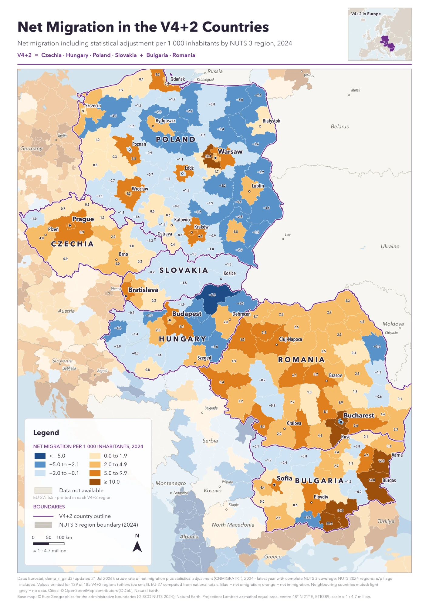
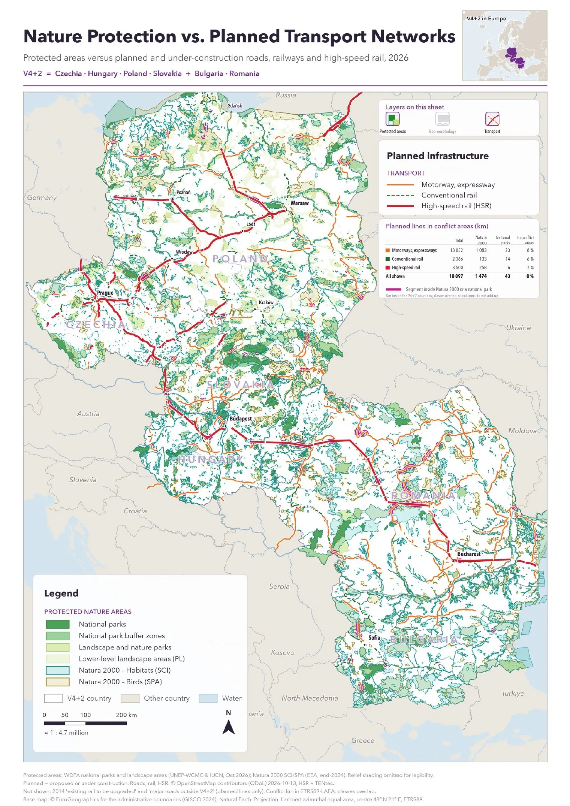

Atlas · October 2026
V4+2 Map Atlas
A 36-sheet A3 atlas rebuilt for the Common Spatial Development Strategy of the V4+2 Countries — Czechia, Hungary, Poland, Slovakia, Bulgaria and Romania. It keeps the themes of the 2014 original, but every map is redrawn from the latest open data with one legend system, one typeface and one palette, so sheets can be compared at a glance.
The barriers chapter adds a conflict analysis of planned transport infrastructure against Natura 2000 sites and high mountains.
- 36
- sheets + cover
- 6
- countries
- ~10 GB
- source data
How: one Python script per sheet on a shared style library (layout, legend, basemap, labels, projections); output as vector PDF and 300 dpi PNG.
-
Czechia · Hungary · Poland · Slovakia · Bulgaria · Romania
V4+2 Map Atlas
Common Spatial Development Strategy of the V4+2 Countries maps recreated with 2024–2026 data
A3 atlas · October 2026Bojan Baidanoff
-
V4+2 Map Atlas
Contents
- Development poles and axes
- 1
- Transport networks
- 2–5
- Technical infrastructure
- 6–8
- Socio-economic conditions
- 9–12a
- Environmental conditions
- 13–18
- Barriers of spatial development
- 19–28
- European context
- A3-1–4
This web edition shows six of the 36 sheets: figures 1, 3, 8, 10, 10a and 21.
-

-

-

-

-

-

-
In the full atlas
30 more sheets
Railways, waterways and airports; electricity and gas; natural change, GDP and unemployment; biogeographic regions, protected areas, Natura 2000 and land cover; nine barrier sheets and four maps of the European context.
Sources
OpenStreetMap contributors (ODbL) · Eurostat and GISCO (© EuroGeographics) · EEA · Copernicus · European Commission TENtec · Global Energy Monitor (CC BY 4.0) · GIE · ENTSO-E · UNEP-WCMC and IUCN Protected Planet · OurAirports · Natural Earth. Full source notes are in the footnote of each sheet.
Original strategy: ÚÚR, Brno, 2014.
-
V4+2 Map AtlasOctober 2026
Click a page, swipe, or use the arrow keys to turn pages.